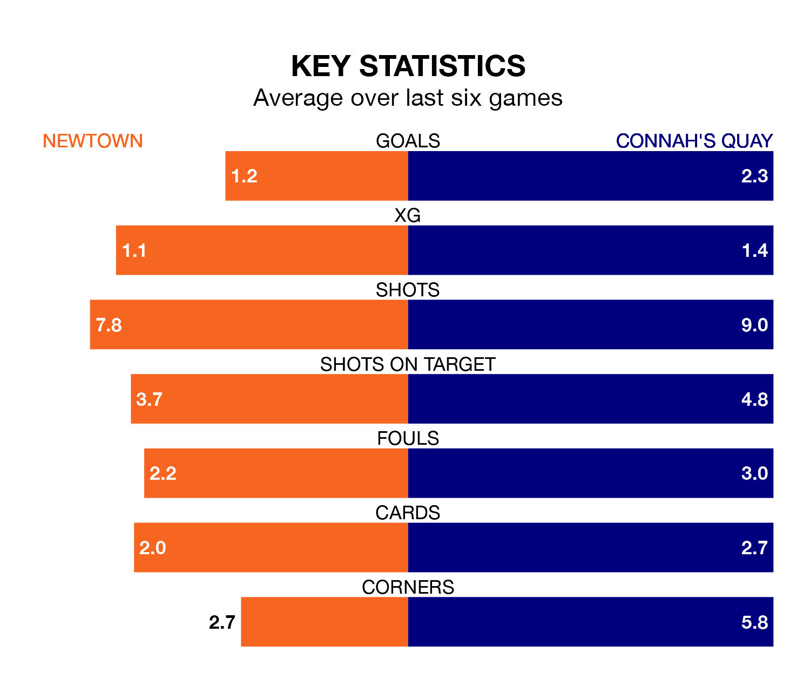

Relegation candidates Newtown face a challenge against high-flying Connah's Quay at G.F. Grigg Latham Park on Saturday.
Newtown are fifth in the Welsh Premier League table, and have picked up 10 wins and three draws in their 23 games to date.
The Nomads, meanwhile, are second in the standings with 48 points, having won 15 and drawn three, and are 17 points behind table-toppers The New Saints.
With 60 goals in 23 games so far this season, Connah's Quay are the league's second-highest scorers with 2.6 goals per game. And they are conceding fewer than average, letting in 30 goals at a rate of 1.3 per game.
Newtown, meanwhile, are average scorers, with 1.5 goals per game. They have also conceded 1.5 goals per game.
The White Stars are in bad form in the Welsh Premier League, with one win and five losses from their last six games.
With four wins and a draw over that period, the Nomads's form is much better – they have taken 13 points from 18, compared to the hosts' three.
In the last 10 years, Newtown and Connah's Quay have played each other on 26 occasions. Newtown won six of them, Connah's Quay 16, and they drew four times.
On average, the White Stars scored 1.1 goals and the Nomads 1.8 in those matches.
Their last meeting was on December 26, when Connah's Quay won 2-1 away.
Newtown's last match was on Tuesday, a 3-0 loss against The New Saints.
Connah's Quay drew 1-1 with Caernarfon Town last time out, on February 2, with Ryan Harrington on the scoresheet.
Updated: 11:43 (UTC), 08/02/24